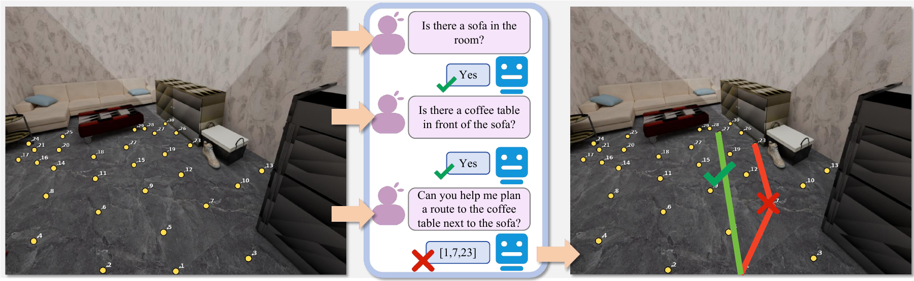

Point Traversability
Select candidate locations feasible for a point agent.
SHANGHAI JIAO TONG UNIVERSITY · EMBODIED INTELLIGENCE
EgoPathBench: Evaluating Zero-Shot Egocentric Waypoint Decision-Making in Vision-Language Models
THE BENCHMARK
Given an egocentric RGB image, a natural-language goal, and numbered visible waypoints, a model selects traversable candidates or predicts an ordered route. A scene-grounded evaluator checks feasibility, adjacent-edge legality, and goal arrival under point-agent or embodied geometry.

Select candidate locations feasible for a point agent.
Account for the agent footprint and clearance.
Compose a legal route to an explicit target.
Reach the target while respecting body geometry.
Resolve the intended goal and form an embodied route.
FOUNDATION MODEL EVALUATION
The main comparison uses each model's native/default behavior on the fixed benchmark. Traversability columns report balanced accuracy; route columns report success rate. All values are percentages. EgoPath Score averages chance-adjusted traversability (2 × BA − 1) and the three route success rates.
| Model | A1 | B1 | A2 | B2 | C | EgoPath Score |
|---|
A parseable sequence of in-vocabulary waypoint IDs can still fail to form an edge-legal, goal-correct route. Results here describe the released observation and evaluation protocol.
BUILD ON EGOPATHBENCH
Training and validation splits accompany the benchmark, with geometry-grounded answers and reference routes. Spatial CoT provides additional supervision for first-person spatial reasoning.
Browse code and evaluation tools
EgoPathBench/EgoPathBenchHugging Face release preparation in progress.
31,852 / 1,345 / 1,111arXiv submission pending.